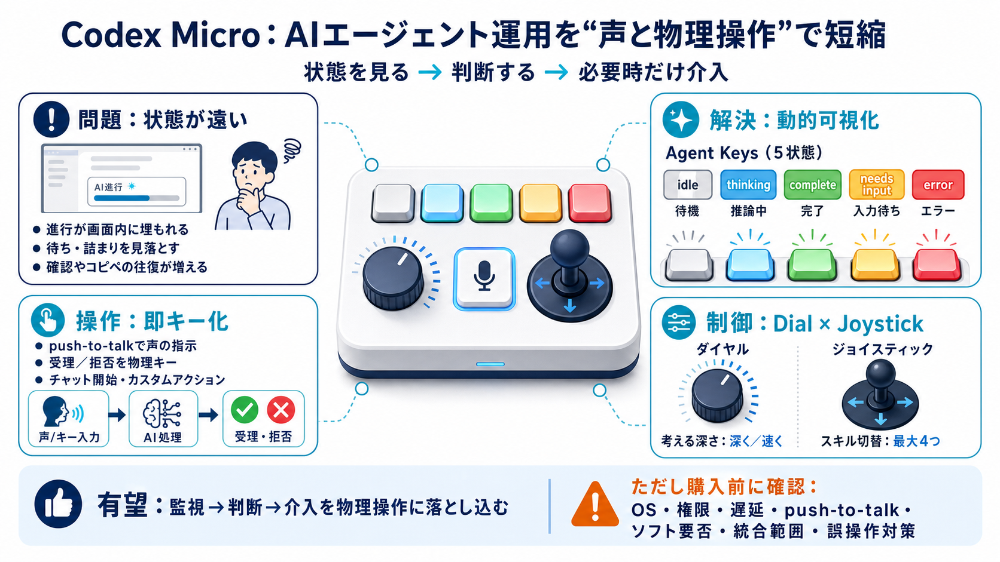

Codex Micro Launched as a Dedicated Controller for OpenAI Codex Power Users: Price, Features | Technology News
* Codex Micro Launched as a Dedicated Controller for OpenAI Codex Power Users: Price, Features. OpenAI co-designed the C…

Codex Microは、AIエージェントの状態表示・指示・監視を“声と物理操作”で一体化する専用ハードウェアです。
AIエージェントの進行は画面内にあり、複数ステップでは「いま何が起きているか」を把握しづらくなります。
idle/thinking/complete/needs input/errorのような状態が、エージェントキーの色や状態として反映される設計です。
出力の受け入れ／拒否、プッシュトゥトーク、チャット開始、カスタムアクションを“即時実行”できるとされています。
ダイヤルで「考える深さ」を調整し、ジョイスティックでプリセット／カスタムスキルを最大4つ呼び出す構成です。
コンパクトな筐体で多機能化するために、6層のキー割り当て画面（レイヤー）と見える化を組み合わせています。
状態が変わる→必要ならキーで受理／拒否→入力が必要ならpush-to-talkなどで補う、という流れを想定できます。
「Codexに直接統合」「追加の“もっさりしたダウンロード”や別ソフトの検証が不要」を差別化として訴求しています。
状態可視化と即時操作が揃うことで、マルチステップ作業の“待ち時間”と“判断の遅れ”を減らす方向性が示されています。
本文の中心は通常タイピングではなく、エージェント状態の監視と介入（音声・受理・拒否・カスタムアクション）にあります。
本文にはスペック欄の見切れや、対応OS／対応アプリ／ソフト要否／出荷先などの具体回答が不足しており、実運用の可否を判断できません。
頻出の問いは用意されていますが、回答が見当たらない／断定できない項目があり、追加情報での検証が必要です。
状態可視化と介入の即時性は、開発・ドキュメント・レビューのような反復が多い領域で効果が出やすい、という見方が示されています。
Codex Microは「エージェント運用の手触り」を変える可能性があります。ただし対応要件と統合の実態が不足しているため、購入前検証が重要です。
* Codex Micro Launched as a Dedicated Controller for OpenAI Codex Power Users: Price, Features. OpenAI co-designed the C…
# OpenAI Turned Codex Into a Mini Keyboard: $230, With Agent Reasoning Control. OpenAI and Work Louder introduced Codex …
## Post. OpenAI introduces the Codex Micro, a $230 keypad developed with Work Louder, designed to enhance control over A…
# OpenAI Is Selling $230 Codex Micro Hardware Product With Work Louder. OpenAI recently teamed up with Work Louder to re…
OpenAI has launched Codex Micro, a $230 hardware controller built with keyboard maker Work Louder for managing Codex cod…